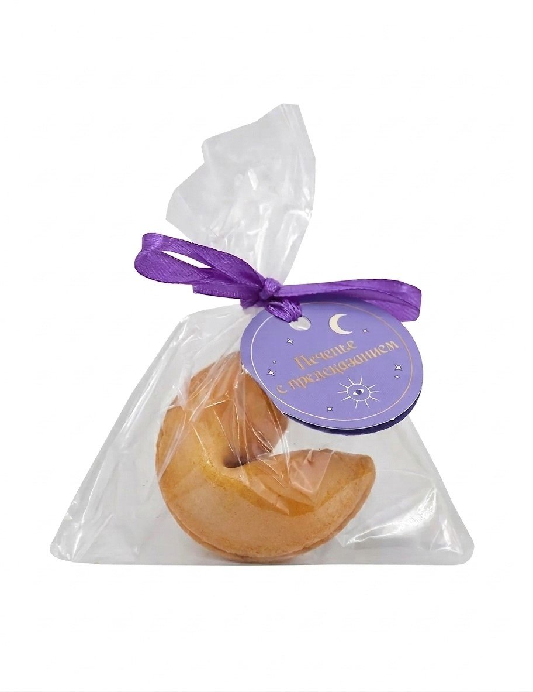

История печений с предсказаниями

Печенье с предсказанием (англ. Fortune cookie) — кондитерское изделие в виде печенья специфичной формы, изготовленное из теста. Фирменное изделие многих ресторанов в США, представляющее собой, как правило, ванильные печеньица, в каждое из которых запечена бумажка с мудрыми изречениями, афоризмами или пророчествами.
Точное происхождение печенья с предсказанием неизвестно, но большинство версий сходятся в том, что они принесены в США в начале XX века японскими и китайскими иммигрантами. Хотя прототип этих сладостей возник ещё в XIX веке в японских храмах, и они, большей частью, стали их производить в Америке, но ассоциироваться с Китаем этот десерт стал во время Второй мировой войны, когда японцы и американцы японского происхождения массово отправлялись в концлагеря, и производство печенья «подхватили» китайцы.
Удивительно, но факт — большое количество выигрышных билетов в национальной лотерее Бразилии в 2004 году было связано с счастливыми числами из печенья с предсказаниями, распространяемых китайской сетью ресторанов под названием Chinatown. Также есть и другие истории, когда печенье с предсказанием приносило богатство, а желания сбывались. Так, в прошлом году американец из города Шарлотт сорвал джекпот. Он пять лет использовал в лотерейных билетах числа из китайского печенья с предсказаниями. Мужчина стал обладателем приза в два миллиона долларов.
Наш сайт предлагает окунуться в атмосферу волшебства и представить, что каждое предсказание может стать началом чего-то нового и интересного. Главное — верить в лучшее и сохранять хорошее настроение.